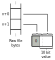

Video file format¶
The VC-2 conformance software uses a simple video and metadata format to represent uncompressed pictures consisting of a raw video file and associated JSON metadata file. This format is described below and it is left to the codec implementer to perform any translation necessary between this format and the format expected by the codec under test.
Below we’ll describe the file format before introducing the
vc2-picture-explain utility which can aid in understanding and displaying
videos in this format.
Format description¶
Each picture in a sequence is stored as a pair of files: a file containing only
raw sample values (.raw) and a metadata file containing a JSON description
of the video format and picture number (.json). Both files are necessary in
order to correctly interpret the picture data.
File names¶
The following naming convention is used for sequences of pictures:
<name>_<number>.raw and <name>_<number>.json where <name> is the
same for every picture in the sequence and <number> starts at 0 and
increments contiguously. For example, a four picture sequence might use the
following file names:
my_sequence_0.rawmy_sequence_0.jsonmy_sequence_1.rawmy_sequence_1.jsonmy_sequence_2.rawmy_sequence_2.jsonmy_sequence_3.rawmy_sequence_3.json
Note
The <number> part of the filename can optionally include leading zeros.
.raw (picture data) file format¶
The raw picture file (*.raw) contains sample values in ‘planar’ form where
the values for each picture component are stored separately as illustrated
below:
Sample values are stored in raster scan order, starting with the top-left sample and working left-to-right then top-to-bottom.
Samples are stored as unsigned integers in the smallest power-of-two number of bytes in which they fit. For example:
1 to 8 bit formats use one byte per sample
9 to 16 bit formats use two bytes per sample
17 to 32 bit formats use four bytes per sample
And so on…
Note
The luma (Y) and color difference (C1, C2) components might have different bit depths, and therefore use a different number of bytes per sample in the raw format.
Sample values are stored in little-endian byte order, least-significant-bit aligned and zero padded.
For example, a 10 bit sample is stored as two bytes. The first byte contains the least significant eight bits of the sample value. The two least significant bits of the second byte contain the two most significant bits of the sample value. The six most significant bits of the second byte are all zero. This is illustrated below:
.json (metadata) file format¶
Each raw picture file is accompanied by a metadata file with the same name but
a .json extension. This file is a UTF-8 encoded JSON (ECMA-404) with the following structure:
{
"picture_number": <string>,
"picture_coding_mode": <int>,
"video_parameters": <video-parameters>
}
The picture_number field gives the picture number (see section (12.2) of
the VC-2 standard) as a string. This might not be the same as the number used
in the file name.
Note
A string is used for the picture_number field because JSON
implementations handle large integers inconsistently.
The picture_coding_mode indicates whether each picture corresponds to a
frame (0) or a field (1) in the video (see section (11.5)).
Note
Note that the scan format flag defined in the source_sampling field of
the video_parameters (11.4.5) does not control whether pictures
correspond to frames or fields.
The video_parameters field contains an object of the following form:
<video-parameters> = {
"frame_width": <int>,
"frame_height": <int>,
"color_diff_format_index": <int>,
"source_sampling": <int>,
"top_field_first": <bool>,
"frame_rate_numer": <int>,
"frame_rate_denom": <int>,
"pixel_aspect_ratio_numer": <int>,
"pixel_aspect_ratio_denom": <int>,
"clean_width": <int>,
"clean_height": <int>,
"left_offset": <int>,
"top_offset": <int>,
"luma_offset": <int>,
"luma_excursion": <int>,
"color_diff_offset": <int>,
"color_diff_excursion": <int>,
"color_primaries_index": <int>,
"color_matrix_index": <int>,
"transfer_function_index": <int>
}
This is the same structure described in section (11.4) of the VC-2 standard and
populated by the source_parameters pseudocode function.
Computing picture component dimensions and depths¶
The dimensions of the Y, C1 and C2 components of each picture in the raw file
can be computed from the metadata as specified in the picture_dimensions
pseudocode function from section (11.6.2) of the VC-2 standard:
picture_dimensions(video_parameters, picture_coding_mode):
state[luma_width] = video_parameters[frame_width]
state[luma_height] = video_parameters[frame_height]
state[color_diff_width] = state[luma_width]
state[color_diff_height] = state[luma_height]
color_diff_format_index = video_parameters[color_diff_format_index]
if (color_diff_format_index == 1):
state[color_diff_width] //= 2
if (color_diff_format_index == 2):
state[color_diff_width] //= 2
state[color_diff_height] //= 2
if (picture_coding_mode == 1):
state[luma_height] //= 2
state[color_diff_height] //= 2
The sample value bit depth is computed by the video_depth pseudocode
function given in section (11.6.3) of the VC-2 standard:
video_depth(video_parameters):
state[luma_depth] = intlog2(video_parameters[luma_excursion]+1)
state[color_diff_depth] = intlog2(video_parameters[color_diff_excursion]+1)
vc2-picture-explain utility¶
The VC-2 conformance software provides the vc2-picture-explain command line utility which produces informative explanations of the raw format used by a particular video, along with commands to display the video directly, if possible.
For example, given a typical raw 1080i60, 10-bit 4:2:2 video file as input:
$ vc2-picture-explain picture_0.raw
Normative description
=====================
Picture coding mode: pictures_are_fields (1)
Video parameters:
* frame_width: 1920
* frame_height: 1080
* color_diff_format_index: color_4_2_2 (1)
* source_sampling: interlaced (1)
* top_field_first: True
* frame_rate_numer: 30000
* frame_rate_denom: 1001
* pixel_aspect_ratio_numer: 1
* pixel_aspect_ratio_denom: 1
* clean_width: 1920
* clean_height: 1080
* left_offset: 0
* top_offset: 0
* luma_offset: 64
* luma_excursion: 876
* color_diff_offset: 512
* color_diff_excursion: 896
* color_primaries_index: hdtv (0)
* color_matrix_index: hdtv (0)
* transfer_function_index: tv_gamma (0)
Explanation (informative)
=========================
Each raw picture contains a single field. The top field comes first.
Pictures contain three planar components: Y, Cb and Cr, in that order, which are
4:2:2 subsampled.
The Y component consists of 1920x540 10 bit values stored as 16 bit (2 byte)
values (with the 6 most significant bits set to 0) in little-endian byte order.
Values run from 0 (video level -0.07) to 1023 (video level 1.09).
The Cb and Cr components consist of 960x540 10 bit values stored as 16 bit (2
byte) values (with the 6 most significant bits set to 0) in little-endian byte
order. Values run from 0 (video level -0.57) to 1023 (video level 0.57).
The color model uses the 'hdtv' primaries (ITU-R BT.709), the 'hdtv' color
matrix (ITU-R BT.709) and the 'tv_gamma' transfer function (ITU-R BT.2020).
The pixel aspect ratio is 1:1 (not to be confused with the frame aspect ratio).
Example FFMPEG command (informative)
====================================
The following command can be used to play back this video format using FFMPEG:
$ ffplay \
-f image2 \
-video_size 1920x540 \
-framerate 60000/1001 \
-pixel_format yuv422p10le \
-i picture_%d.raw \
-vf weave=t,yadif
Where:
* `-f image2` = Read pictures from individual files
* `-video_size 1920x540` = Picture size (not frame size).
* `-framerate 60000/1001` = Picture rate (not frame rate)
* `-pixel_format` = Specifies raw picture encoding.
* `yuv` = Y C1 C2 color.
* `422` = 4:2:2 color difference subsampling.
* `p` = Planar format.
* `10le` = 10 bit little-endian values, LSB-aligned within 16 bit words.
* `-i /tmp/picture_%d.raw` = Input raw picture filename pattern
* `-vf` = define a pipeline of video filtering operations
* `weave=t` = interleave pairs of pictures, top field first
* `yadif` = (optional) apply a deinterlacing filter for display purposes
This command is provided as a minimal example for basic playback of this raw
video format. While it attempts to ensure correct frame rate, pixel aspect
ratio, interlacing mode and basic pixel format, color model options are omitted
due to inconsistent handling by FFMPEG.
Example ImageMagick command (informative)
=========================================
No ImageMagick command is available for this raw picture format (Unsupported bit
depth: 10 bits).
Here, the ‘explanation’ section provides a human readable description of the raw format. This might be of help when trying to interpret the raw video data.
Example invocations of FFmpeg’s ffplay command and
ImageMagick’s convert command are provided,
when possible, for displaying the raw picture data directly.
Tip
The sample ffplay commands generated by vc2-picture-explain assume
the number in each filename does not contain leading zeros. If your
filenames contain leading zeros, replace the %d in the picture
filenames in the generated commands with %02d (or with 2 set to
however many digits are used) to handle this situation.
Tip: Splitting and combining picture data files¶
Many codec implementations natively produce or expect a raw video format where picture data is stored concatenated in a single file rather than as individual files. If individual pictures within a concatenated video format use the same representation as the conformance software, the following commands can be used to convert picture data between single-file and file-per-picture forms.
Note
All of the commands below assume you are using a Bash shell and GNU implementations of standard POSIX tools.
Warning
The commands described below only deal with picture data (*.raw) files.
You will still need to process the metadata (*.json files) by other
means.
Combining pictures¶
To concatenate a series of (for example) 8 picture data (*.raw) files
numbered 0 to 7 into a single file, cat can be used:
$ cat picture_{0..7}.raw > video.raw
Warning
The explicit use of the Bash {0..7} range specifier is preferred over
using a simple wildcard (e.g. *). This is because the order in which
the individual pictures are listed by the wildcard expansion is not well
defined.
Splitting concatenated pictures¶
To split a series of pictures concatenated together in a single file into
individual pictures, split can be used:
$ split \
video.raw \
-b 12345 \
-d \
--additional-suffix=".raw" \
picture_
The file to be split is given as the first argument (
video.rawin this example)The
-b 12345argument defines the number of bytes in each picture and12345should be replaced with the correct number for the format used.The
-dargument causessplitto number (rather than letter) each output file.The
--additional-suffixargument ensures the output filenames end with.raw.Final argument gives the start of the output filenames (
picture_in this example)
Tip
An easy way to determine the picture size for a given video format is to
use the wc command to get the size of a picture file generated by the
conformance software. For example:
$ wc -c path/to/picture_0.raw
12345
Tip
The split command adds leading zeros in the picture numbers of the
output files. These will not be found by the sample ffplay commands
generated by vc2-picture-explain. Replace the %d in the picture
filenames in the generated commands with %02d to handle this situation.
Next, let’s walk through the process of generating test cases in Generating test cases.